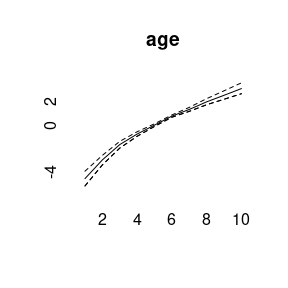

Simulating Age-Period-Cohort Data
Volker Schmid
2021-07-28
Source:vignettes/largevignettes/simulation.Rmd
simulation.Rmd

periods_per_agegroup=5
number_of_cohorts <- periods_per_agegroup*(10-1)+15
cohort<-rep(0,60)
cohort[1:15]<-(14:0)
cohort[16:30]<- (1:15)/2
cohort[31:60]<- 8
cohort<-cohort/10
cohort<-cohort-mean(cohort)
plot(cohort, type="l")
simdata<-apcSimulate(-10, age, period, cohort, periods_per_agegroup, 1e6)
print(simdata$cases)## [,1] [,2] [,3] [,4] [,5] [,6] [,7] [,8] [,9] [,10]
## [1,] 2 8 22 59 79 119 175 400 1092 3065
## [2,] 1 4 16 29 67 110 154 300 851 2287
## [3,] 1 4 16 34 53 66 128 224 667 1693
## [4,] 0 2 13 29 48 89 107 167 445 1293
## [5,] 0 5 8 25 40 79 93 119 305 883
## [6,] 0 1 5 19 40 51 78 119 265 712
## [7,] 0 3 6 8 32 42 64 101 192 507
## [8,] 0 1 4 9 28 45 60 80 139 379
## [9,] 1 1 2 14 36 65 93 98 173 383
## [10,] 2 1 4 19 32 81 102 128 166 446
## [11,] 0 3 10 20 50 81 129 155 237 503
## [12,] 0 5 15 25 37 91 160 196 299 551
## [13,] 0 4 11 31 65 127 194 307 330 584
## [14,] 1 3 16 47 85 160 237 343 453 660
## [15,] 2 7 19 44 107 198 298 475 623 721
simmod <- bamp(cases = simdata$cases, population = simdata$population, age = "rw1",
period = "rw1", cohort = "rw1", periods_per_agegroup =periods_per_agegroup)## Warning: MCMC chains did not converge!
print(simmod)##
## WARNING! Markov Chains have apparently not converged! DO NOT TRUST THIS MODEL!
##
## Model:
## age (rw1) - period (rw1) - cohort (rw1) model
## Deviance: 133.42
## pD: 49.06
## DIC: 182.48
##
##
## Hyper parameters: 5% 50% 95%
## age 0.529 1.233 2.445
## period 13.224 26.392 45.965
## cohort 75.412 119.010 183.802
checkConvergence(simmod)## Warning: MCMC chains did not converge!## [1] FALSE
plot(simmod)


effects<-effects(simmod)
effects2<-effects(simmod, mean=TRUE)
#par(mfrow=c(3,1))
plot(age, type="l")
lines(effects$age, col="blue")
lines(effects2$age, col="green")


prediction<-predict_apc(simmod, periods=5, population=array(1e6,c(20,10)))
plot(prediction$cases_period[2,], ylim=range(prediction$cases_period),ylab="",pch=19)
points(prediction$cases_period[1,],pch="–",cex=2)
points(prediction$cases_period[3,],pch="–",cex=2)
for (i in 1:20)lines(rep(i,3),prediction$cases_period[,i])
plot(prediction$period[2,])
cov_p<-rnorm(15,period,.1)
simmod2 <- bamp(cases = simdata$cases, population = simdata$population, age = "rw1",
period = "rw1", cohort = "rw1", periods_per_agegroup =periods_per_agegroup,
period_covariate = cov_p)##
## Automatic check procedure removed 1 Markov chain. Please check for convergence using checkConvergence() and maybe change your model settings (maybe add overdispersion).
print(simmod2)##
## Model:
## age (rw1) - period (rw1) - cohort (rw1) model
## Deviance: 133.85
## pD: 49.58
## DIC: 183.43
##
##
## Hyper parameters: 5% 50% 95%
## age 0.512 1.239 2.521
## period 13.509 26.201 45.316
## cohort 73.754 118.639 182.036
##
##
## Markov Chains convergence checked succesfully using Gelman's R (potential scale reduction factor).
checkConvergence(simmod2)## [1] TRUE
plot(simmod2)